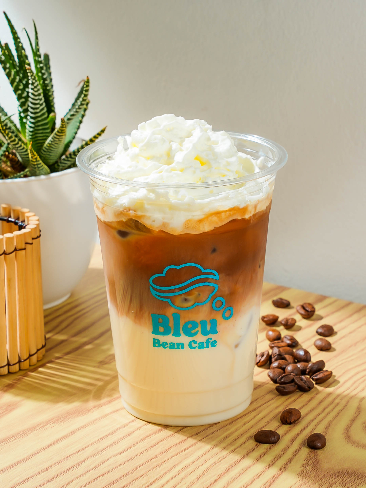

Barista Choice
Tiramisu Latte
The Tiramisu Latte is an indulgent, dessert-inspired coffee that strikes the perfect balance between rich, creamy sweetness and bold espresso. With every sip, you're greeted by a smooth, velvety texture that feels almost like a liquid dessert.
It's a decadent treat that feels both comforting and luxurious, making it ideal for those who crave something a little sweeter, without being too heavy. Perfect for sipping slowly or enjoying as a midday pick-me-up.